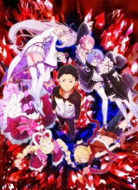

The first return and Subaru’s impossible beginning.
OPEN REVIEW →
A SECOND CHANCE WITH A COST
Re:Zero places Subaru Natsuki in a fantasy world where his greatest power is also his deepest burden. Return by Death allows him to begin again after fatal failure, but it does not erase the fear, grief, or isolation of remembering what everyone else has forgotten. The story turns repetition into character drama, asking what a person can endure when progress requires reliving the moment everything went wrong.
Subaru’s journey is compelling because the ability does not make him invincible. He often lacks the combat skill, knowledge, and emotional control needed to protect the people around him. His real development comes through humility, communication, and the willingness to accept help. Each reset forces him to understand the world more carefully rather than simply overpowering the next obstacle.
MEMORY, TRUST, AND CONSEQUENCE
Re:Zero treats memory as a relationship. Subaru carries the emotional weight of timelines that no longer exist for anyone else, while the people he loves judge him only by the version of him standing in front of them. That tension creates some of the series’ most powerful scenes. Trust must be rebuilt through actions, not demanded because Subaru knows what happened before.
WHY IT MATTERS
Re:Zero is a dark fantasy about persistence without easy heroism. Its supernatural rules support a story about grief, responsibility, and the difficult work of becoming someone others can rely on. The repeated timelines are not just a plot device; they are a way to show how growth can be painful, uneven, and still worth choosing.
SEASON REVIEWS
The Sanctuary and the weight of the past.
OPEN REVIEW →The City of Water and a crisis that demands leadership.
OPEN REVIEW →Choose a season above to open its dedicated review.
SHOP THE WORLD
Re:Zero home-video releases for collectors of the series.
 SEASON 1
SEASON 1Re:ZERO Season 1 Director’s Cut Steelbook Blu-ray.
VIEW PRODUCT → SEASON 2
SEASON 2Re:Zero Season 2 Blu-ray.
VIEW PRODUCT → SEASON 3
SEASON 3Re:ZERO Season 3 Limited Edition.
VIEW PRODUCT →